Link to source: Source
| 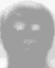 | 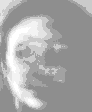 | 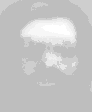 |
For this project, we compared various techniques for face recognition. We focused our efforts on Principal Component Analysis and Mean Face comparison. We experimented using different pre-processing techniques before performing PCA as well as testing different measures of similarity and modifying the value of k in k-Nearest Neighbor.
We used k-Nearest Neighbor to attempt to match a face with the subject it most closely related to. kNN works by finding the neighbors that are "closest" to a test image and picking the neighbor that is most frequent as its best match. The value of k determines how many neighbors will be analyzed when trying to pick a match. In order for kNN to work, a measure of similarity between the test image and all training images needs to be computed. These results are then sorted and the top k neighbors are chosen. The neighbors in our algorithm are the list of images that were the closest match to the test image. Because each person has multiple images for them, we determine which person showed up most frequently, and say that is who the test image most closely matches.
We tried four different measures of similarity before using its results to find the nearest neighbor. The similarity measures we tried using were:
To test our implementation we used the AT&T face database. We had two main directories: one with all the training images in it and another, with the same folder structure, which had the test faces. For every subject/person from the original AT&T face database, we randomly held back a single image from that person and placed it into the corresponding folder in the test directory. We then read in all the files in the train set and performed PCA on set of images. Next we read in all the faces from the test folder and, one-by-one, subtracted the mean face from the image and then projected it onto the basis images (the U matrix) and calculated its coefficients. We then performed k-Nearest Neighbor to find the image(s) which most closely matched the ones from the test image.
Below is the table showing our initial results on the ATT face set with no pre-processing performed. The table below shows the results when we used Euclidean distance as our measure of similarity and k=1 for the value of k in k-Nearest Neighbor.
| Method | Correct | Incorrect | % Correct |
|---|---|---|---|
| PCA 2 Coefficients | 6 | 34 | 15.0 |
| PCA 4 Coefficients | 11 | 29 | 27.5 |
| PCA 6 Coefficients | 14 | 26 | 35.0 |
| PCA 9 Coefficients | 23 | 17 | 57.5 |
| Mean Face | 39 | 1 | 97.5 |
| 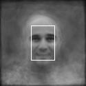 | 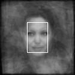 | 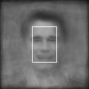 | 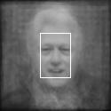 | 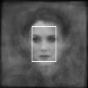 |
We extended the base option to work with another data set of faces; specifically, the 40-person subset of "aligned labelled faces in the wild". The images above show the results of averaging together a few images of individual famous people from this data set, resulting in faces that are notably still recognizable to humans.
We tested this data by using the full set of images as training data (with different numbers of images per person), and also by limiting the training data to 18 randomly selected images per person (such that each person has equal representation in the training data), with both PCA recognition and mean face recognition.
For each of these training data options, we tried using full images (but resampled to half-size, due to computer memory constraints), and using only the face portion of the image (the 70x100 center rectangle, highlighted in the images above). Using the full images produced very poor results in all tests, so that data is not shown. This is probably because much of the background portions of the images were evaluated in the matching, which contributes to erroneous results. Using only the central face portion of the image produced much better results, but still markedly worse than that for the more homogeneous data set in the base option. In fact, the best results are significantly less than half correct. The poor results are probably due to the fact that the images vary so much more than the ones from base option. Even with only the face portion shown, the lighting conditions are still greatly varying compared to that of base option, resulting in poor matching.
Somewhat surprisingly, limiting the data set to an equal number of images per person yielded slightly worse results. This seems to indicate that having more images for some people does not necessarily cause erroneous matches to gravitate toward them. Rather, limiting the diversity of the training set images probably contributes to worse matches.
Below is the table showing our overall results for our testing on the aligned labelled faces in the wild image set. This uses only the center 70x100 face portion of the image.
| Method | Correct | Incorrect | % Correct |
|---|---|---|---|
| PCA 2 Coefficients | 1 | 45 | 2.1 |
| PCA 4 Coefficients | 4 | 42 | 8.7 |
| PCA 6 Coefficients | 4 | 42 | 8.7 |
| PCA 9 Coefficients | 6 | 40 | 13.0 |
| Mean Face | 18 | 28 | 39.1 |
Below is the table showing our overall results for testing the aligned labelled faces in the wild, but by training with equal-sized data sets for each subject (18 images each). The training images for each subject were chosen at random. Again, only the center 70x100 face portion of the image was used.
| Method | Correct | Incorrect | % Correct |
|---|---|---|---|
| PCA 2 Coefficients | 1 | 45 | 2.2 |
| PCA 4 Coefficients | 3 | 43 | 6.5 |
| PCA 6 Coefficients | 3 | 43 | 6.5 |
| PCA 9 Coefficients | 6 | 40 | 13.0 |
| Mean Face | 16 | 30 | 34.8 |
| 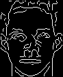 | 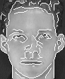 | 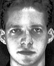 | 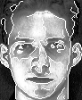 | 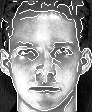 |
The images above show the various pre-processing techniques which were used prior to performing PCA on the image set. From left to right, the images above are: the original image; the edge map of the original image; the edge map overlaid on the original image; the original image with the histogram equalized; histogram equalized image with edge map obtained from histogram qualized image overlaid; histogram equalized image with edge map obtained from original image overlaid.
The first pre-processing technique we tried was to calculate the edge map of the original image. We used the built in Matlab edge function to calculate the edge map. We thought that by reducing the image down to the edge map, we might be able to reduce the time needed by PCA to compute the coefficients. We also believed it would lead to better results because it would reduce the face down to a few key features that would distinguish it from other faces. Surprisingly, the use of edge map caused the number of correct matches to be greatly reduced. We theorize that this reduction in correct matches is due to a reduction in the amount of image data describing the face. Because there is less data describing the face, the differences between one face and another is decreased, leaving PCA to generate similar coefficients for dissimilar faces. See the Edge Map Results table below for results of this experiment.
Because of this observation, we thought that if we tried overlaying the edge map on top of the original image, we might be able to boost our initial results. We believed that retaining the original image data and making edges more apparent might help to distinguish faces from another. Our experiment proved us partially correct for all but PCA with two coefficients. It definitely helped improve our results over just using the edge map as a pre-processing step. Our results also increased slightly over using the just the original image for all cases except where just two coefficients were used. We speculate this increase in overall success of facial recognition is due to additional detail about the image being introduced before running PCA. This additional info helps to better separate the distinguishing features between each face and helps lead to better results when performing recognition. See the Overlaid Edge Map Results table below for results of this experiment.
Not entirely happy with the previous results, we tried another pre-processing technique and thought we could improve a bit more. This time we tried histogram equalization on the entire image. Histogram equalization is a process used to increase the pixel intensity of the image to match some defined histogram. Histogram equalization can have the benefit of making less noticeable features more distinguishable. For all of our tests, we used histogram equalization with a flat histogram. This had the overall effect of boosting the contrast in our images. The initial results of histogram equalization were about the same or worse than PCA on the original images. However, when 9 coefficients were used, our results improved from 57.5% to 72.5%. We believe the reason for this disparity between the results getting worse for a small number of coefficients and then getting better when more coefficients were used is because the histogram equalization made the differences among the faces ambiguous when only a small number of coefficients were used. That is even though some features were made more apparent, some features were "washed" out when the overall pixel intensity increased. With a small number of coefficients, the more subtle features where not able to be distinguished, and thus resulted in poor performance. However, once more coefficients were used, the subtle features where able to be captured by the basis images and the coefficients of PCA. See the Histogram Equalization Results table below for results of this experiment.
Because of what we learned when overlaying the edge map on the original image and making use of histogram equalization, we decided to try overlaying the edge map of the equalized image on top of the equalized facial image. The results surprised us. Compared to the overlaid edge map, the results decreased in all but the 9 coefficient case. When compared with histogram equalization, the results were similar, but overall slightly worse. This would seem to tell us that when each of the pre-processing techniques are done independent of each other, there is a good separation of features distinguishing the faces that PCA can detect and use to separate the images. However, when the two pre-processing techniques are combined, there may be a blurring or merging of the unique features into a smaller set of features, which results in PCA creating basis images and coefficients that lead to improper matching when evaluation is performed. See the Histogram Equalization with Edge Map Results table below for results of this experiment.
We later realized, that maybe our results would improve if we did edge detection on the original image and then overlaid this edge map on histogram equalized image. This differs slightly from the previous technique in that we are calculating the edge map of the original image and not the histogram equalized image. This technique managed to improve our results in all cases except where the number of coefficients used was 9. Similar to when we overlaid the edge map on the original image, this likely improved our results because it helped to better distinguish differences in features between faces. See the Histogram Equalization with Original Edge Map Results table below for results of this experiment.
Below is the table showing our overall results when using edge map as a preprocessing step. The results were obtained using Euclidean distance and k=1.
| Method | Correct | Incorrect | % Correct |
|---|---|---|---|
| PCA 2 Coefficients | 4 | 36 | 10.0 |
| PCA 4 Coefficients | 6 | 34 | 15.0 |
| PCA 6 Coefficients | 9 | 31 | 22.5 |
| PCA 9 Coefficients | 12 | 28 | 30.0 |
Below is the table showing our overall results when using an edge map overlaid on the original image. The results were obtained using Euclidean distance and k=1.
| Method | Correct | Incorrect | % Correct |
|---|---|---|---|
| PCA 2 Coefficients | 4 | 36 | 10.0 |
| PCA 4 Coefficients | 12 | 28 | 30.0 |
| PCA 6 Coefficients | 16 | 24 | 40.0 |
| PCA 9 Coefficients | 24 | 16 | 60.0 |
Below is the table showing our overall results when using histogram equalization as a preprocessing step. The results were obtained using Euclidean distance and k=1.
| Method | Correct | Incorrect | % Correct |
|---|---|---|---|
| PCA 2 Coefficients | 4 | 36 | 10.0 |
| PCA 4 Coefficients | 6 | 34 | 15.0 |
| PCA 6 Coefficients | 11 | 29 | 27.5 |
| PCA 9 Coefficients | 29 | 11 | 72.5 |
Below is the table showing our overall results when using an edge map calculated from the histogram equalized image, overlaid on the histogram equalized image. The results were obtained using Euclidean distance and k=1.
| Method | Correct | Incorrect | % Correct |
|---|---|---|---|
| PCA 2 Coefficients | 2 | 38 | 5.0 |
| PCA 4 Coefficients | 6 | 34 | 15.0 |
| PCA 6 Coefficients | 14 | 26 | 35.0 |
| PCA 9 Coefficients | 26 | 14 | 65.0 |
Below is the table showing our overall results when using an edge map calculated from the original image, overlaid on the histogram equalized image. The results were obtained using Euclidean distance and k=1.
| Method | Correct | Incorrect | % Correct |
|---|---|---|---|
| PCA 2 Coefficients | 4 | 36 | 10.0 |
| PCA 4 Coefficients | 10 | 30 | 25.0 |
| PCA 6 Coefficients | 21 | 19 | 52.5 |
| PCA 9 Coefficients | 26 | 14 | 65.0 |
We tried many combinations of similarity measures and modifying the value of k. The table below shows the top 5 combinations obtained. All the results below are for PCA only. Since Euclidean distance was the best measurement of similarity, all the results below were obtained using Euclidean distance as the similarity measurement.
| Method | Correct | Incorrect | % Correct |
|---|---|---|---|
| c=9,k=1,h | 29 | 11 | 72.5 |
| c=9,k=3,h | 29 | 11 | 72.5 |
| c=9,k=3,he | 26 | 14 | 65.0 |
| c=9,k=1,he2 | 26 | 14 | 65.0 |
| c=9,k=3,e | 24 | 16 | 60.0 |
In the table above, c=# of coefficients used, h=histogram equalization, e=edge map overlaid on image, he=histogram equalization w/performed, then edge map overlaid on top, he2=histogram equalization w/performed, then the original edge map overlaid on top, k=# of neighbors examined.